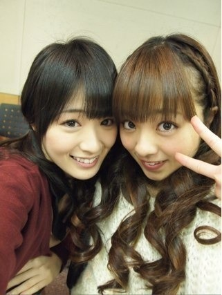
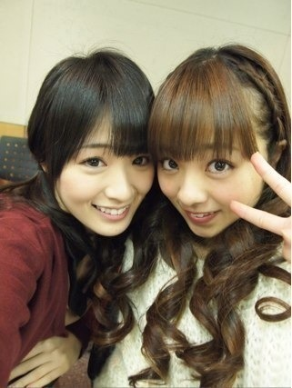

2012/1124Sat（´-`）.｡oO(かずみん×116
こんばんは(*^^*)
いつも応援ありがとうございます！
今週はありがたいことに
毎日忙しかったです(>_<)
でも毎日楽しかったです(^^)
情報解禁までしばしお待ちを♪
--------
陽菜ちゃんブログに
飴と鞭ネタが書いてありましたね♪
そうなんです！
最近ユル巻きツインテールに
ハマってるのですが、
陽菜ちゃんの許可がいるんです(￣▽￣)
陽菜ちゃんは鞭(毒舌)なので、
今まではなかなか許可がおりなかった
のですが、この前やっとおりました！
アメイジング＼(^o^)／
元々可愛い物は大好きなのですが、
乃木坂だと私は年齢が上の方なので
躊躇してた面もありました(´Д` )
でも最近は、さらけ出せるように
なりました(*^^*)
今週は空き時間にずーっと
ジェーンマープルの洋服を
ネットで見てたんです\(//∇//)\
さっきも玲香と
"いつかこんな服着たいね。"
"これなら頑張れば買えるかな〜"と
お話してました！
脱・アベイル目指そうと思います！笑
さゆみんみたいに可愛い女の子に
なりたいなぁ...(´･_･`)
髪の毛も伸ばし中です♪
ガジ頑張らねば！
--------
この前一眼でとった写真を載せます♪
今日はまいまい(*^^*)
似顔絵会に残念ながら
来れなかった皆さん、
この写真を見て元気だしてくれたら
嬉しいです(*^_^*)
------
今日もお疲れ様でした(^^)
最後にろってぃとの写メ＊

私の親友の女の子がろってぃ推しで
この前の全握でうちわ降ってました。笑
かずみうちわはもう1人の親友が
ふってくれてましたヽ(；▽；)ノ
私もろってぃのパフォーマンスが
大好きです\(//∇//)\
喋り方も好きっ！
それでは今日はこの辺で( ´ ▽ ` )ﾉ
内容がナイヨー(T_T)
ごめんなさい！
おやすみなさい...☆
いつも応援ありがとうございます！
今週はありがたいことに
毎日忙しかったです(>_<)
でも毎日楽しかったです(^^)
情報解禁までしばしお待ちを♪
--------
陽菜ちゃんブログに
飴と鞭ネタが書いてありましたね♪
そうなんです！
最近ユル巻きツインテールに
ハマってるのですが、
陽菜ちゃんの許可がいるんです(￣▽￣)
陽菜ちゃんは鞭(毒舌)なので、
今まではなかなか許可がおりなかった
のですが、この前やっとおりました！
アメイジング＼(^o^)／
元々可愛い物は大好きなのですが、
乃木坂だと私は年齢が上の方なので
躊躇してた面もありました(´Д` )
でも最近は、さらけ出せるように
なりました(*^^*)
今週は空き時間にずーっと
ジェーンマープルの洋服を
ネットで見てたんです\(//∇//)\
さっきも玲香と
"いつかこんな服着たいね。"
"これなら頑張れば買えるかな〜"と
お話してました！
脱・アベイル目指そうと思います！笑
さゆみんみたいに可愛い女の子に
なりたいなぁ...(´･_･`)
髪の毛も伸ばし中です♪
ガジ頑張らねば！
--------
この前一眼でとった写真を載せます♪
今日はまいまい(*^^*)
似顔絵会に残念ながら
来れなかった皆さん、
この写真を見て元気だしてくれたら
嬉しいです(*^_^*)
------
今日もお疲れ様でした(^^)
最後にろってぃとの写メ＊

私の親友の女の子がろってぃ推しで
この前の全握でうちわ降ってました。笑
かずみうちわはもう1人の親友が
ふってくれてましたヽ(；▽；)ノ
私もろってぃのパフォーマンスが
大好きです\(//∇//)\
喋り方も好きっ！
それでは今日はこの辺で( ´ ▽ ` )ﾉ
内容がナイヨー(T_T)
ごめんなさい！
おやすみなさい...☆
2012/11/24 00:24
コメント(370)
こんばんはー。
かずみんのツインテール可愛いかった！
衝撃的。
可愛いらしさ全開のかずみんをいっぱい見たいよ( ꒪⌓꒪)
かずみんのツインテール可愛いかった！
衝撃的。
可愛いらしさ全開のかずみんをいっぱい見たいよ( ꒪⌓꒪)
かずみんの写メかっわいい(*^。^*)
カキフライ美味しいよねー
おなか一杯食べたいよ。
寒くなってきたので風邪ひかないように気を付けてください(^.^)/~~~
カキフライ美味しいよねー
おなか一杯食べたいよ。
寒くなってきたので風邪ひかないように気を付けてください(^.^)/~~~
かずみんお疲れ～
忙しい中更新ありがと〜
情報解禁待ってます(￣▽￣)
アメイジング＼(^o^)／
忙しい中更新ありがと〜
情報解禁待ってます(￣▽￣)
アメイジング＼(^o^)／
aloha(*･ω･)ﾉ
はじめまして～！
かずみんのブログにコメントするの初です！
他のメンバーのブログにはコメントしてたんだけどね(x_x)
七瀬とかまいやんとか( ^^)/
好きなのは七瀬なんだけどね(笑)
かずみんはねぇ
キャラが好きだわヽ(^0^)ﾉ
面白い！
あっ、友達がかずみんのこと推してるよ！
ふぅ～、アメイジ～ング＼(^o^)／
ってことでこの辺にしときます！
したらばっ( ^^)/
はじめまして～！
かずみんのブログにコメントするの初です！
他のメンバーのブログにはコメントしてたんだけどね(x_x)
七瀬とかまいやんとか( ^^)/
好きなのは七瀬なんだけどね(笑)
かずみんはねぇ
キャラが好きだわヽ(^0^)ﾉ
面白い！
あっ、友達がかずみんのこと推してるよ！
ふぅ～、アメイジ～ング＼(^o^)／
ってことでこの辺にしときます！
したらばっ( ^^)/
かずみんかわいすぎる 俺のコメントのないようがないよう
俺のコメントのないようがないよう ごめんなさい
ごめんなさい
情報解禁いつ～？
早く知りたいよー(￣▽￣)笑
ryさんと僕はアベイル単推しなんで(￣▽￣)
お疲れ！
相変わらずの可愛さにアメイジング＼(^o^)／
最近みんな忙しそうだね！？
無理しすぎず体調には気をつけてね（笑）
相変わらずの可愛さにアメイジング＼(^o^)／
最近みんな忙しそうだね！？
無理しすぎず体調には気をつけてね（笑）
こんばんは!!
写真たくさん嬉しいなぁ！
ひなぴょんブログ見たよ!!
ツインテール許可制なんだね(笑)
年下に支配されてるんだね！
写真たくさん嬉しいなぁ！
ひなぴょんブログ見たよ!!
ツインテール許可制なんだね(笑)
年下に支配されてるんだね！
まいまいの写真見て元気でた！寝るとこなのに。かずみんも好きだ！もうみんな好きだ！あー会いたい。９月３日のプリンシパルでおれはかずみんと目があったよ。かずみん好きです！
かずみばんちゃ(^O^)／
ゆーたんなう
さゆみん最近綺麗になったなぁーって思うわ！
キャラももう少し大人になってくれたらベストかな
かずみはキャラ…今のままでいいからヾ(＠゜▽゜＠)ノ
今日も1日お疲れちゃん
ぢゃぁ
(一実o^∀^o46)
↑
これ大事
ゆーたんなう
さゆみん最近綺麗になったなぁーって思うわ！
キャラももう少し大人になってくれたらベストかな
かずみはキャラ…今のままでいいからヾ(＠゜▽゜＠)ノ
今日も1日お疲れちゃん
ぢゃぁ
(一実o^∀^o46)
↑
これ大事
かずみんの写メ見るのいつも楽しみ
可愛く、かっこよく
面白いかずみん 要求はどんどん
高まっていく
可愛く、かっこよく
面白いかずみん 要求はどんどん
高まっていく
お疲れ様です！！
忙しいのはいいことですね(^ω^)
情報解禁楽しみだー(>_<)
ゆる巻きツインテールにハマってるんですか！？
陽菜ちゃんの許可がいるんだww
かわいいのはドンドンさらけだしたほうがいいですよ！！
脱アベイルしちゃうんですかー、安くてオシャレのコンセプトは…
髪伸ばしてるのいいですね(≧∇≦)
まいまい可愛いなぁ(*´`)
ろってぃも可愛いなぁ(*´`)
でもかずみんしか！！！
ではー(￣^￣)ゞ
おやすみなさい☆GOODNIGHT☆
忙しいのはいいことですね(^ω^)
情報解禁楽しみだー(>_<)
ゆる巻きツインテールにハマってるんですか！？
陽菜ちゃんの許可がいるんだww
かわいいのはドンドンさらけだしたほうがいいですよ！！
脱アベイルしちゃうんですかー、安くてオシャレのコンセプトは…
髪伸ばしてるのいいですね(≧∇≦)
まいまい可愛いなぁ(*´`)
ろってぃも可愛いなぁ(*´`)
でもかずみんしか！！！
ではー(￣^￣)ゞ
おやすみなさい☆GOODNIGHT☆
にゅん(=ﾟωﾟ)ﾉ
たかやまってた！笑
二人ともオソロでゆるツイン♪
かわいかったよ(((o(*ﾟ▽ﾟ*)o)))
もっと突っ込み入れたれ！笑
毒舌はしょうがないよね(￣▽￣)
今日も一日お疲れさま！
おやすみ♪。
☆☆☆☆☆☆プーさん☆☆☆☆☆☆
たかやまってた！笑
二人ともオソロでゆるツイン♪
かわいかったよ(((o(*ﾟ▽ﾟ*)o)))
もっと突っ込み入れたれ！笑
毒舌はしょうがないよね(￣▽￣)
今日も一日お疲れさま！
おやすみ♪。
☆☆☆☆☆☆プーさん☆☆☆☆☆☆
内容がナイヨー(T_T)
一実…なかなかやるな（苦笑）
紅葉には行ったかな？
紅葉に行こうよう…
…
紅葉…
い・こよう…
俺の勝だな(￣▽￣)
一実…なかなかやるな（苦笑）
紅葉には行ったかな？
紅葉に行こうよう…
…
紅葉…
い・こよう…
俺の勝だな(￣▽￣)
かずみん♪
こんばんは(*^^*)
スケちゃんです(^o^ゞ
毎日お疲れ様ー(*^^*)
大変でも楽しめることは幸せなことやな(*^^*)
ひなぴょんから許可がおりて良かったな(*^^*)
アメイジング＼(^o^)／
ユル巻きツインテール可愛いから握手会でもしてほしい(*^^*)
脱・アベイル目指してガジ頑張ってな(^^)d
さゆみんとはさゆりんのことカナ？(笑)
たくさんの写真をありがとう(*^^*)
似顔絵会に行かれへんかったからめっちゃ元気になったよー(*^^*)
とっても、かずみん思いな優しい親友やなー(*^^*)
内容がナイヨー...。
かずみん今こそポジティブ＼(^o^)／になって(^^)d
しかも、俺、リアルに笑ったから(*^^*)
めっちゃ面白かったよ＼(^^)／
ブログの更新ありがとう(*^^*)
今日も１日お疲れ様(*^^*)
明日もかずみんにとって素敵で幸せな日になりますように☆
おやすみなさい☆ミ
ほなねー(^^)/
スケちゃんでした(^o^ゞ
こんばんは(*^^*)
スケちゃんです(^o^ゞ
毎日お疲れ様ー(*^^*)
大変でも楽しめることは幸せなことやな(*^^*)
ひなぴょんから許可がおりて良かったな(*^^*)
アメイジング＼(^o^)／
ユル巻きツインテール可愛いから握手会でもしてほしい(*^^*)
脱・アベイル目指してガジ頑張ってな(^^)d
さゆみんとはさゆりんのことカナ？(笑)
たくさんの写真をありがとう(*^^*)
似顔絵会に行かれへんかったからめっちゃ元気になったよー(*^^*)
とっても、かずみん思いな優しい親友やなー(*^^*)
内容がナイヨー...。
かずみん今こそポジティブ＼(^o^)／になって(^^)d
しかも、俺、リアルに笑ったから(*^^*)
めっちゃ面白かったよ＼(^^)／
ブログの更新ありがとう(*^^*)
今日も１日お疲れ様(*^^*)
明日もかずみんにとって素敵で幸せな日になりますように☆
おやすみなさい☆ミ
ほなねー(^^)/
スケちゃんでした(^o^ゞ
ひさびさぁー(泣けてくるぜぃ)
かぁーずぅーみぃーんっ！
元気してるね。
ガジ頑張ってよ！
コメントにも
内容がないよー(笑)
お洒落にも
目覚めてください。
期待してるから。
プレッシャーって言わない思わない(笑)
ではまた。
高山さんっ(^^)／
髪の毛伸ばし中なんだね♪
目標はどのくらいまで伸ばすのカナ？
ショートも似合うと思うけどなあ(*^^*)
ロングも似合うと思うけど←どっちやねんっヾ(^^ヘ)
☆+。(*′∇｀)。+゜笑顔といったら 高山さんでしょ！
☆かずみだぜぜぜぜぜーいがくせになるぅー(^^ゞ
髪の毛伸ばし中なんだね♪
目標はどのくらいまで伸ばすのカナ？
ショートも似合うと思うけどなあ(*^^*)
ロングも似合うと思うけど←どっちやねんっヾ(^^ヘ)
☆+。(*′∇｀)。+゜笑顔といったら 高山さんでしょ！
☆かずみだぜぜぜぜぜーいがくせになるぅー(^^ゞ
かずみぃぃぃいいいいいいん＼(^o^)／
今週忙しかったんか！ お疲れ様^^
頑張った分だけ報われるといいね♪
期待してまってまっせ(_≧Д≦)ﾉ彡☆♪
ゆるまきツイン最高
陽菜ちゃんの許可必要なのかwww
許可降りてよかったね！！ もっとみたいなかずみんのツイン
可愛いもの好き？笑
知っとるわそんなん！！w
だから香港のやつはあれでも出来るだけ可愛いのを選びました（笑）
クリスマスは～ もっと可愛いのを～
.....あげるのかい、あげないのかい、どっちなんだい！(きんにくん風)
あ～～～げ.........ない(￣∀￣)ﾉ
うそうそw ちゃんと考えときますww
まぁ渡すのは年明けか郵送になっちゃうかなー
いつもだけど遠征は出来ないので.....また来年ですね＞＜
今度俺もうちは作ろっかな（笑）
やっぱうちはって嬉しいものなの？w
ろってぃー歌上手だよね！
PARCOんときびっくりしたw
ゆーてかずみんは天使の歌声、歌姫、ガチ天使(・∀・)/
かずみしかぁぁぁぁああああああ(｡≧ω≦)ﾉ
身体に気をつけてね
無理はしないよーに！
☆☆☆(なお・ω・やん)☆☆☆
今週忙しかったんか！ お疲れ様^^
頑張った分だけ報われるといいね♪
期待してまってまっせ(_≧Д≦)ﾉ彡☆♪
ゆるまきツイン最高
陽菜ちゃんの許可必要なのかwww
許可降りてよかったね！！ もっとみたいなかずみんのツイン
可愛いもの好き？笑
知っとるわそんなん！！w
だから香港のやつはあれでも出来るだけ可愛いのを選びました（笑）
クリスマスは～ もっと可愛いのを～
.....あげるのかい、あげないのかい、どっちなんだい！(きんにくん風)
あ～～～げ.........ない(￣∀￣)ﾉ
うそうそw ちゃんと考えときますww
まぁ渡すのは年明けか郵送になっちゃうかなー
いつもだけど遠征は出来ないので.....また来年ですね＞＜
今度俺もうちは作ろっかな（笑）
やっぱうちはって嬉しいものなの？w
ろってぃー歌上手だよね！
PARCOんときびっくりしたw
ゆーてかずみんは天使の歌声、歌姫、ガチ天使(・∀・)/
かずみしかぁぁぁぁああああああ(｡≧ω≦)ﾉ
身体に気をつけてね
無理はしないよーに！
☆☆☆(なお・ω・やん)☆☆☆
可愛い女の子になってるじゃん
「内容がナイヨー(T_T)」がよかった
「内容がナイヨー(T_T)」がよかった
お疲れさま！ツインテールめちゃえ～ね！
かずみんのツインテール好きやで
この前１ループだけだったけど行けてよかった！
ツイン似合ってたから握手会の時にまたしてな^^
にしても許可必要なのか(笑)
最近忙しいみたいだけど
体調には気を付けろよー
暖かくね！
明日も１日ファイティーン☆
ちなみに俺もアベイルお気に入り(笑)
ツイン似合ってたから握手会の時にまたしてな^^
にしても許可必要なのか(笑)
最近忙しいみたいだけど
体調には気を付けろよー
暖かくね！
明日も１日ファイティーン☆
ちなみに俺もアベイルお気に入り(笑)
かずみーん！
かずみん、ちゃんと許可を取るところが可愛いです。
まいまい真剣な表情ですね。似顔絵会の雰囲気伝わってきます。
お姉さん組に入るかずみんですが、
どんどん可愛い格好して下さい！
そういうかずみんも見てみたい！
まいまい真剣な表情ですね。似顔絵会の雰囲気伝わってきます。
お姉さん組に入るかずみんですが、
どんどん可愛い格好して下さい！
そういうかずみんも見てみたい！
こんばんはヾ(･c_,･｡)ﾉ
かずみん可愛い。可愛すぎるよv(*´>ωω<｡)ﾉ またねぇっ
かずみん可愛い。可愛すぎるよv(*´>ωω<｡)ﾉ またねぇっ
一実☆更新ありがとう☆お疲れ様！
前回のブログへのコメント送れてなかったみたいだね・・・なぜ消えた？ショック！
陽菜の許可がいるんだ！（笑）許可がおりて良かったねっ！アメイジング！
髪の毛伸ばし中なんだねっ！ロングの一実が見たい☆
そんじゃ、またねぇ☆
今日も一実が、笑顔でありますように！！
前回のブログへのコメント送れてなかったみたいだね・・・なぜ消えた？ショック！
陽菜の許可がいるんだ！（笑）許可がおりて良かったねっ！アメイジング！
髪の毛伸ばし中なんだねっ！ロングの一実が見たい☆
そんじゃ、またねぇ☆
今日も一実が、笑顔でありますように！！
高山さん、おはようo(^-^)o
更新待ってました～
勿論、やまちゃんが一番待っていたハズなんでo(^-^)o
写メ、一枚目好きです(≧∇≦)
更新待ってました～
勿論、やまちゃんが一番待っていたハズなんでo(^-^)o
写メ、一枚目好きです(≧∇≦)
毎日充実しているようで良かった
これからの情報も楽しみにしてます。
ツインテールは、陽菜ちゃんの許可がいるのかぁ。
誰にも遠慮せずに好きな髪型出来たらいいのに。
今回の写真の髪型も、シンプルだけど可愛いよ
髪、だいぶ伸びたね。
陽菜ちゃんが、かずみんのツッコミ緩いって書いてあったから、
「なんでよ～」じゃなくて「なんでやねん！」って、
ビシッとツッコんでみてはどう？
今日もガジお疲れ様。
おやすみなさい。
これからの情報も楽しみにしてます。
ツインテールは、陽菜ちゃんの許可がいるのかぁ。
誰にも遠慮せずに好きな髪型出来たらいいのに。
今回の写真の髪型も、シンプルだけど可愛いよ
髪、だいぶ伸びたね。
陽菜ちゃんが、かずみんのツッコミ緩いって書いてあったから、
「なんでよ～」じゃなくて「なんでやねん！」って、
ビシッとツッコんでみてはどう？
今日もガジお疲れ様。
おやすみなさい。
かずみんこんばんは
陽菜ちゃん厳しいなぁ(笑)
オレは、飴と鞭コンビ好きだよ～
そういえば、
制服のマネキンのMV完成したね～
早く、家でじっくり観たいなぁ
そして、かずみんの"苦手克服"も気になる～
発売日が待ち遠しいよ～
かずみんの親友とお話ししてみたいなぁ
アイドルの親友かぁ……
オレの友達もアイドルになれないかな～??(笑)
今日もかずみんが大好きです
ポジティブsay!!
ユル巻きツインテールひなぴょんの許可がいるのか(笑)
かずみんめっちゃ似合ってると思うよ！
可愛い女の子になれるように頑張れ！\(⌒0⌒)笑
かずみんめっちゃ似合ってると思うよ！
可愛い女の子になれるように頑張れ！\(⌒0⌒)笑
こんばんは♪
かずみんはカワユス!!
この一言につきます(笑)
明日も頑張ってください(^-^)/
では、お休みなさい(-.-)Zzz・・・・
そーきゃあかずみんはさゆみんに会うとぶっ壊れちゃうんですな(´・ω・｀)(´・ω・｀)
なるほろー年下にコントロールされるのも面白いのかも知れないでやんすね
かずみんみたいな個性的なキャラクターしてると((((゜д゜;))))(~▽~＠)♪♪♪
画の方も凝ってとってみた感じなのれすね。可愛いかもしれないでげす(￣□￣;)!!((((゜д゜;))))桜井ちゃんとそげなシーンがあるんですな～スタイルいいもの同士だから(笑)
共鳴するシーンがあるのかもですなも～～(〃⌒ー⌒〃)∫゛ヾ(´ω｀＝´ω｀)ノ
なるほろー年下にコントロールされるのも面白いのかも知れないでやんすね
かずみんみたいな個性的なキャラクターしてると((((゜д゜;))))(~▽~＠)♪♪♪
画の方も凝ってとってみた感じなのれすね。可愛いかもしれないでげす(￣□￣;)!!((((゜д゜;))))桜井ちゃんとそげなシーンがあるんですな～スタイルいいもの同士だから(笑)
共鳴するシーンがあるのかもですなも～～(〃⌒ー⌒〃)∫゛ヾ(´ω｀＝´ω｀)ノ
こんばんは☆
収録やら撮影などが多いと早く観てみたいとモヤモヤしますねぇ☆
ゆる巻きツインしてジェーンマープル着たらかずみさんの新たな魅力がでるかもですねw
一眼はどこの使ってますか？レンズもいくつか持ってたりするんでしょうか？(・ω・)
収録やら撮影などが多いと早く観てみたいとモヤモヤしますねぇ☆
ゆる巻きツインしてジェーンマープル着たらかずみさんの新たな魅力がでるかもですねw
一眼はどこの使ってますか？レンズもいくつか持ってたりするんでしょうか？(・ω・)
♪♪かずみん♪♪
こんばんは=^・^=
今週は忙しかったんだ!!
お疲れ様(*^^*)
よくがんはりました(^^ゞ
飴と鞭コンビ何故かほんわかな感じ(m'□'m)
かずみんの一眼レフ
まいまいの写真は前回も
キリッとした感じで
今回も真剣に描いてる表情で、貴重な表情だね♪
かずみんのセンスを感じます♪
あと、かずみんの行けなかった人への気遣い(;_;)
めっちゃ嬉しい♪
そんなかずみんが大好きなんだな(*^^*)
ーーーーチョキチョキーーーー
内容のこと気にしてるけど今回ので十分楽しめたし、かずみんの近況が知れるだけでも嬉しいので、気楽に更新してくれたら嬉しいです(*^_ ’)
寒い毎日、空気も乾燥してるので喉やられないよう気をつけてね(^.^)b
かずみさん♪
おやすみー
またね(*・ｘ・)ノ~~~♪
こんばんは=^・^=
今週は忙しかったんだ!!
お疲れ様(*^^*)
よくがんはりました(^^ゞ
飴と鞭コンビ何故かほんわかな感じ(m'□'m)
かずみんの一眼レフ
まいまいの写真は前回も
キリッとした感じで
今回も真剣に描いてる表情で、貴重な表情だね♪
かずみんのセンスを感じます♪
あと、かずみんの行けなかった人への気遣い(;_;)
めっちゃ嬉しい♪
そんなかずみんが大好きなんだな(*^^*)
ーーーーチョキチョキーーーー
内容のこと気にしてるけど今回ので十分楽しめたし、かずみんの近況が知れるだけでも嬉しいので、気楽に更新してくれたら嬉しいです(*^_ ’)
寒い毎日、空気も乾燥してるので喉やられないよう気をつけてね(^.^)b
かずみさん♪
おやすみー
またね(*・ｘ・)ノ~~~♪
東京アリスなら
中古とかだけど
ジェーンマープル安く売ってるよ
中古とかだけど
ジェーンマープル安く売ってるよ
お仕事お疲れさまです(^.^)ノ
メディアにかずみんが多く出てくるってことかな？
そうだと私は嬉しいです
これからも頑張って
かずみんこんばんは！
毎日忙しいみたいだけど体調は大丈夫？^^;
最近ほんと寒いから風邪には気をつけて(>_<)
かずみんのツインテールとか
アメイジング！＼(^o^)／＼(^o^)／
かわいいなー★
まいまいの写真載っけてくれてありがとー！
似顔絵会行けなかったから
次あるの楽しみにしてるよ♫
またコメントするねー(^-^)/
ポジティブSay!
毎日忙しいみたいだけど体調は大丈夫？^^;
最近ほんと寒いから風邪には気をつけて(>_<)
かずみんのツインテールとか
アメイジング！＼(^o^)／＼(^o^)／
かわいいなー★
まいまいの写真載っけてくれてありがとー！
似顔絵会行けなかったから
次あるの楽しみにしてるよ♫
またコメントするねー(^-^)/
ポジティブSay!
FNS歌謡祭出演決定おめでとー(*^^*)
絶対見なきゃ
絶対見なきゃ
久しぶりにコメントします。髪の毛だいぶ伸びたね。ツインテール似合ってますよ。今度の握手会で、ぜひお願いします。
かずみんはどんな髪型でも、似合うよなあ。
まいまいの写メありがとう。癒されるわ。
あの子は天使だわ。
ひなぴょんと安定の仲良しだね。姉妹みたいだ。
かずみんはどんな髪型でも、似合うよなあ。
まいまいの写メありがとう。癒されるわ。
あの子は天使だわ。
ひなぴょんと安定の仲良しだね。姉妹みたいだ。
かずみんヤッホー(o・・o)/
この３連休することなくて
絶賛ゴロゴロ中←
危うく他のグループの握手会行きかけたわ(笑)
さゆみん？
どっちや？髪長い言ってるからまっちゅんの事か？
かずみんは今でも充分可愛いで←
お世辞抜きで
まっちゅんの写真待ってます(笑)
ほなねﾉｼ
この３連休することなくて
絶賛ゴロゴロ中←
危うく他のグループの握手会行きかけたわ(笑)
さゆみん？
どっちや？髪長い言ってるからまっちゅんの事か？
かずみんは今でも充分可愛いで←
お世辞抜きで
まっちゅんの写真待ってます(笑)
ほなねﾉｼ
さゆみんって誰？？(>_<)
昨日一日お疲れ様♪
どんな仕事したか
気になるよ
飴と鞭コンビで
ゆにっと出してほしいね
そしたら良曲になるよ(笑)
それじゃあ今日も一日頑張ろう！！！！！！！！！
かずみさん、こんばんわ！
ブログ更新ありがとう！
ゆる巻きツイン、ゆっくり見てみたいですね。
名古屋個握で期待してまーす。
ひなぴょん！許可をよろしくお願いしますね。
脱・アベイルを目指しますか！
かわいい女性（←今でも十分かわいいけど）
目指してガジ頑張ってくださいね！
大変身を楽しみにしています☆
レコード大賞新人賞ノミネートされずで、残念だったよ。
密かに、期待してたんだけどね。
でもでも、ＦＮＳ歌謡祭出演決定おめでとう！
楽しみにしています！
ブログ更新ありがとう！
ゆる巻きツイン、ゆっくり見てみたいですね。
名古屋個握で期待してまーす。
ひなぴょん！許可をよろしくお願いしますね。
脱・アベイルを目指しますか！
かわいい女性（←今でも十分かわいいけど）
目指してガジ頑張ってくださいね！
大変身を楽しみにしています☆
レコード大賞新人賞ノミネートされずで、残念だったよ。
密かに、期待してたんだけどね。
でもでも、ＦＮＳ歌謡祭出演決定おめでとう！
楽しみにしています！
内容がナイヨーって…上手い(笑)お疲れ様です(^^ゞ
寒いから風邪引かないように(≧ω≦)
寒いから風邪引かないように(≧ω≦)
更新お疲れ様＼(^o^)／
やびゃあ(//∇//)いきなり可愛い
3枚目も見て思った。かずみん絶対可愛くなってるし、自撮り上手くなってるwww
今週忙しかったのか(';')
更新ペースでなんとなくそんな気がしたけど(´□｀)
楽しかったならよかった＼(^o^)／
----------
あ、陽菜ちゃんのブログ見た見た(笑)
かずみんがツッコミ回ることもあるのかｗ
なんか全握とかで聞いたイメージだと完全にかずみんが煙たがられてる感じだったのにwwww
今の二人の会話聞いてみたい(`･ω･´)
許可おりてよかったね(笑)
(結構陽菜ちゃんの判断的をいてる気がする←)
可愛い面出してこ出してこ！歌の時とか自然にカッコいいというかｷﾘｯとした面出てるから！
普段は可愛い感じでいきまひょ(';')
ｼﾞｪｰﾝﾏｰﾌﾟﾙ?
調べてみたらめっちゃ可愛いねこれ。
実際にモデルが着てるのとか見てみたけど、
かずみん似合いそう！！！！
頑張って買って写メ早く撮って(笑)
え( ゜Д゜)
アベイル卒業ですか･･･
これは陽菜ちゃんの許可おりたんですかね？(笑)←
さゆりんみたいに可愛い女の子になるのはいいけど、芸風は真似…しないでね(笑)
かずみかんパーンチとか急にやり始めたらなんてコメントいていいか分からないよおじさん(´□｀)
-------
似顔絵会も行きたかったな！
前回のブログのかずみんの写真でテンションあがったよ＼(^o^)／
ろってぃーとの写真のかずみん可愛い(//∇//)
ろってぃーの髪の毛がかずみんの髪の毛に見えて！？！？ってなったけど(笑)
伸びたらこんなイメージになるのか！
楽しみ＼(^o^)／
今日もブログ楽しかったよ！！(`･ω･´)
おやすみー
かずみんのブログきたし、朝まで課題頑張れる＼(^o^)／
仕事忙しいみたいだけど
本当に風邪とか気をつけてね。
ではでは
やびゃあ(//∇//)いきなり可愛い
3枚目も見て思った。かずみん絶対可愛くなってるし、自撮り上手くなってるwww
今週忙しかったのか(';')
更新ペースでなんとなくそんな気がしたけど(´□｀)
楽しかったならよかった＼(^o^)／
----------
あ、陽菜ちゃんのブログ見た見た(笑)
かずみんがツッコミ回ることもあるのかｗ
なんか全握とかで聞いたイメージだと完全にかずみんが煙たがられてる感じだったのにwwww
今の二人の会話聞いてみたい(`･ω･´)
許可おりてよかったね(笑)
(結構陽菜ちゃんの判断的をいてる気がする←)
可愛い面出してこ出してこ！歌の時とか自然にカッコいいというかｷﾘｯとした面出てるから！
普段は可愛い感じでいきまひょ(';')
ｼﾞｪｰﾝﾏｰﾌﾟﾙ?
調べてみたらめっちゃ可愛いねこれ。
実際にモデルが着てるのとか見てみたけど、
かずみん似合いそう！！！！
頑張って買って写メ早く撮って(笑)
え( ゜Д゜)
アベイル卒業ですか･･･
これは陽菜ちゃんの許可おりたんですかね？(笑)←
さゆりんみたいに可愛い女の子になるのはいいけど、芸風は真似…しないでね(笑)
かずみかんパーンチとか急にやり始めたらなんてコメントいていいか分からないよおじさん(´□｀)
-------
似顔絵会も行きたかったな！
前回のブログのかずみんの写真でテンションあがったよ＼(^o^)／
ろってぃーとの写真のかずみん可愛い(//∇//)
ろってぃーの髪の毛がかずみんの髪の毛に見えて！？！？ってなったけど(笑)
伸びたらこんなイメージになるのか！
楽しみ＼(^o^)／
今日もブログ楽しかったよ！！(`･ω･´)
おやすみー
かずみんのブログきたし、朝まで課題頑張れる＼(^o^)／
仕事忙しいみたいだけど
本当に風邪とか気をつけてね。
ではでは
似顔絵会いきたかった(泣)
今度かずみんに会うのは１月の
全国握手会かな。
長いぜ。
かずみんに会いたい！
かずみんとうとう脱出するのか
アベイルを!
方向転換でいいと思う(笑)
かずみんはなんでも
服似合うと思う
かずみん今日はお疲れ様
(´・ω・`)
今度かずみんに会うのは１月の
全国握手会かな。
長いぜ。
かずみんに会いたい！
かずみんとうとう脱出するのか
アベイルを!
方向転換でいいと思う(笑)
かずみんはなんでも
服似合うと思う
かずみん今日はお疲れ様
(´・ω・`)
（´v`）.｡oO(えりひか×４８８
一実、こんばんは。
高山一実Familyの「えりひか」です。
毎日忙しいようで、そして健康に過ごされて
いること、何よりです。
気持ちの充実感、伝わってきます。
ＦＮＳ歌謡祭、初出演の嬉しい知らせが
届きました。
本当に、おめでとうございます。
今の日本の歌謡祭の中で、トップクラスの
音楽イベントに、初めて出演することが出来て
嬉しくて、嬉しくて・・・。
毎年の視聴率は、２０％前後を維持している
マンモス歌番組です。
これで、また乃木坂４６の知名度がアップ
しますし、一実ファンも増えてきます。
嬉しい限りです。
１２月に行うライブは、いつもの気合プラス
今年の集大成をぶつけ、素敵なステージに
なるよう臨んでください。
「いつも心に、高山一実」
Positive Say！！ Yes！ Positive！！
いつも一実の成功を、心から祈っています。
これからも「えりひか」は、一実を一途に愛し
一実の夢が叶うまで、永遠に支え続けます。
おやすみなさい・・・。
一実、こんばんは。
高山一実Familyの「えりひか」です。
毎日忙しいようで、そして健康に過ごされて
いること、何よりです。
気持ちの充実感、伝わってきます。
ＦＮＳ歌謡祭、初出演の嬉しい知らせが
届きました。
本当に、おめでとうございます。
今の日本の歌謡祭の中で、トップクラスの
音楽イベントに、初めて出演することが出来て
嬉しくて、嬉しくて・・・。
毎年の視聴率は、２０％前後を維持している
マンモス歌番組です。
これで、また乃木坂４６の知名度がアップ
しますし、一実ファンも増えてきます。
嬉しい限りです。
１２月に行うライブは、いつもの気合プラス
今年の集大成をぶつけ、素敵なステージに
なるよう臨んでください。
「いつも心に、高山一実」
Positive Say！！ Yes！ Positive！！
いつも一実の成功を、心から祈っています。
これからも「えりひか」は、一実を一途に愛し
一実の夢が叶うまで、永遠に支え続けます。
おやすみなさい・・・。
おかずぅ～（笑）
十分可愛いですよ！
忙しかった内容、気になります(ﾟ～ﾟo)
でも充実した日々だったようで何より
その分この連休はお休みできるのかな？
カキフライ会まで牡蠣活ガジがんばりまーす (｀・д・´)ゝ
ではー
十分可愛いですよ！
忙しかった内容、気になります(ﾟ～ﾟo)
でも充実した日々だったようで何より
その分この連休はお休みできるのかな？
カキフライ会まで牡蠣活ガジがんばりまーす (｀・д・´)ゝ
ではー


MVめっちゃかっこよかったね！もう楽しみすぐる！
はよいろいろ解禁されてくれ～～
明日も応援してるよ！かずみんふぁいっとぉ～